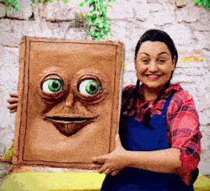

Espectáculos con Títeres y Animatrónica

Nuestros espectáculos combinan actores, títeres, animatrónicos,
juegos de luces y proyecciones multimedia para crear experiencias
mágicas que fascinan a los niños.
Cada espectáculo cuenta
con un guion cuidadosamente elaborado, pensado para captar la
atención de los estudiantes y mantenerlos inmersos en la
historia.
Además, cada espectáculo está diseñado para
fomentar la creatividad y la participación activa de los
estudiantes, creando un ambiente de aprendizaje inmersivo.